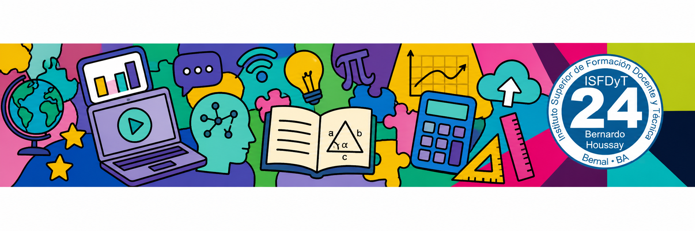

Fecha: viernes 23 de octubre de 2026 — Modalidad: presencial
En este encuentro presencial trabajaremos en el aula en la construcción de los instrumentos de evaluación de la secuencia didáctica con TIC. Articularemos los criterios de enseñanza con las evidencias de aprendizaje que los estudiantes secundarios producirán a lo largo de los tres encuentros.
Resta exactamente una semana para la entrega formal en Google Docs. Aprovechamos este espacio presencial para resolver dudas, revisar observaciones y cerrar el diseño de la evaluación.
A continuación, presentamos los principales instrumentos de evaluación relevados de los documentos oficiales y orientaciones pedagógicas (Escuela de Maestros - buenosaires.gob y Educrea), para que seleccionen los más adecuados para su secuencia didáctica:
| Instrumento | Definición según el documento | Fuente oficial |
|---|---|---|
| Lista de cotejo | Guía de observación que enumera comportamientos específicos o características principales de las competencias que se desean observar; permite registrar su presencia o ausencia. | buenosaires.gob |
| Portafolio | Colección organizada de trabajos, orientada por una propuesta que le da sentido, estructura y continuidad; documenta cambios en las producciones del estudiante y permite una evaluación individual y longitudinal. | buenosaires.gob |
| Prueba | Situación organizada para obtener documentos que den cuenta de los aprendizajes; puede ser oral, escrita o de actuación. | buenosaires.gob |
| Registro | Instrumento de observación que puede ser anecdótico o acumulativo, para documentar comportamientos, avances y evidencias de aprendizaje. | buenosaires.gob |
| Escala | Instrumento que gradúa el nivel de logro de un rasgo o criterio observado. | buenosaires.gob |
| Cuestionario | Instrumento que puede ser abierto o cerrado, útil para relevar conocimientos, opiniones o autoinformes. | buenosaires.gob |
| Informe | Producción que sistematiza información sobre un aprendizaje, proceso o desempeño. | buenosaires.gob |
| Entrevista | Instrumento de recogida de información, guiada o abierta, que permite profundizar en comprensiones, dificultades y procesos del estudiante. | buenosaires.gob |
Consulten los documentos teóricos y normativos sobre diseño de instrumentos de evaluación y didáctica de la matemática:
Propuestas e instrumentos de evaluación formativa orientados a la educación secundaria. Ministerio de Educación de Córdoba.
Definiciones, clasificación y pautas prácticas para la confección de escalas, listas de cotejo, registros y rúbricas.
Material formativo de la Escuela de Maestros (buenosaires.gob) con conceptualizaciones de instrumentos y registros de evidencias.
Estructura formal obligatoria de la secuencia didáctica, casilleros para recursos TIC, instrumentos de evaluación y anexo para registro de prompts de Inteligencia Artificial.
Criterios con los que la cátedra evaluará su secuencia didáctica entregada y dimensiones del posterior coloquio de acreditación final.